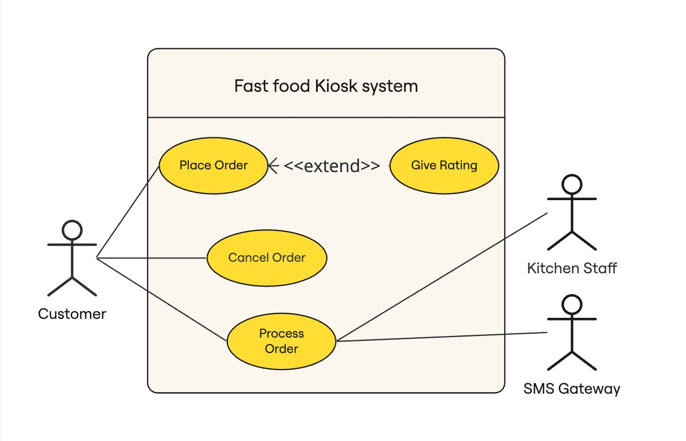
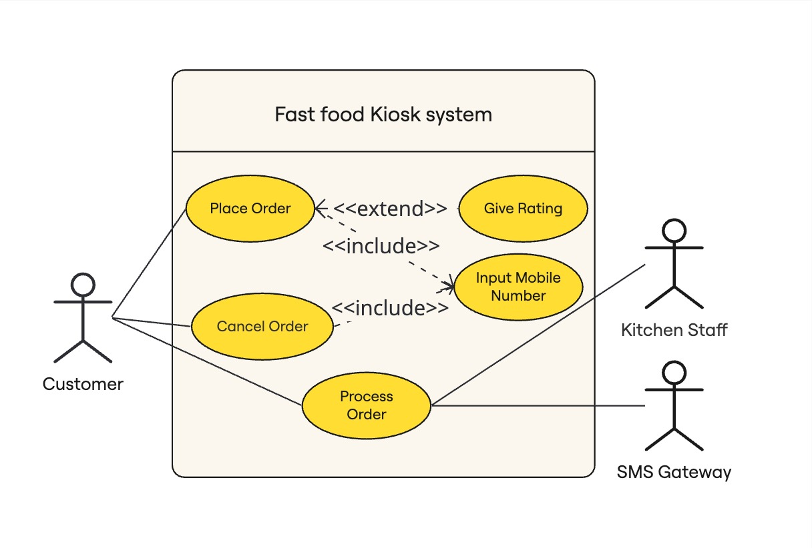

50.003 - Use Case
Learning Outcomes
By the end of this unit, you should be able to
- Describe the different components of a use case.
- Desscibe the different components of a use case diagram.
- Analyse the given system requirements using use cases and use case diagrams.
Use case
A use case (or a use case text, or use case document) captures a particular scenario or related scenarios in a user-system interaction. Our goal to find out all relevant user-system interaction in the existing system to be fixed and in the newly proposed system that the users want us to build.
An example - Fast Food Kiosk
Consider the following user interaction with a food ordering Kiosk system to-be deployed in the fast food outlets.
The customer browses the menu and adds the food or drink items into her order. When she finishes adding items into her order, she can choose to pay using her credit card and enter her mobile number for collection notification. The Fast Food Kiosk System (simplified as system from now onwards) checks the authorization on the credit card and confirms the sales by issuing a queue number. The system records the ordered items and sets the order status as new.
Although in general there is no fixed format of use case text documents, for consistency, we try to adhere to the following convention.
| ID: | UC1 | Name: | Place Order |
| Description: | Customer orders food and drinks using a Kiosk machine | ||
| Created By: | Kenny Lu | Date Created: | 1st May 2024 |
| Last Updated By: | Kenny Lu | Date Updated: | 3rd May 2024 |
| Actors: | Customer | ||
| Triggers: | Customer accesses the Place Order interface of the Kiosk System. | ||
| Preconditions: | Nil | ||
| Postconditions: |
1. The system creates a new order with the ordered items. 2. The customer receives a queue number. |
Error States: | The order is cancelled and the ordered items are not recorded by the system. |
| Flow: |
1. The customer browses the menu. 2. The customer adds the food or drink items into her order. 3. The customer makes payment using her credit card. 4. The customer enters her mobile number. 5. The System authorizes the purchase. 6. The System confirms the order by creating a new order and saving the ordered items. 7. The System issues a queue number. |
||
| ... | |||
In the table above, we define the use case. All non-italic fields are mandatory. * For tracking purpose, every use case should be given a unique ID and a informative name. * The description summarizes the gist of the user-system interaction * Though optional (hence in italic), it is also good to keep track of the creator and updater's names and the dates. * The actors field includes a set of actors involved in this interaction. In this example, the customer is the primary actor since she is the one who initiates the interaction. The rest are secondary actors if there is any. Every use case should have at least one actor. * The triggers field describes what activates this use case, which can be a user action or another user case's action. * The preconditions field includes a list of mandatory criteria must be met before this user-system interaction is initiated. Sometimes, if a precondition is a common to a set of use cases, we convert it into a common requirement field. * The postcondictions field includes a list of possible output states when the use case completes successfully * The error states field capture the failed outcomes. * The flow contains a sequence of actions performed by the actors in chronological order.
Note that there is the ... in the above table, and there is no visible way to trigger the failed postcondition. This is because the use case is incomplete.
Suppose the user requirement continues as follows.
" Before the payment is authorized, the order can be cancelled either by the customer or by a 10-second inactivity timeout. "
With this we continue our use case as follows
| ID: | UC1 | Name: | Place Order |
| Continue from the previous table | |||
| Alternative Flow: | 3'. The customer cancels the order before making payment. 5'. The credit card authorization fails. |
||
In the above, we specify the alternative flow. In the event of either of the alternative-flow actions occur, the error states will be result. In this case, the order is cancelled.
Now next consider another paragraph of user requirement.
" The kitchen staff selects a newly generated order by the system and processes the order. The system changes the status of the order from new to processing. When the order is ready the kitcen staff changes the order's system status from processing to ready. The ordered items are placed at the collection counter, and the customer is informed by the system via SMS. After the customer picks up the ordered items. The system changes the order's status to completed. "
| ID: | UC2 | Name: | Process Order |
| Description: | Kitchen staff processes the customer's order | ||
| Created By: | Kenny Lu | Date Created: | 1st May 2024 |
| Last Updated By: | Kenny Lu | Date Updated: | 3rd May 2024 |
| Actors: | Kitchen Staff, SMS Gateway, Customer | ||
| Triggers: | The kitchen Staff selects a newly created order from the system. | ||
| Preconditions: | There exists some new order in the System | ||
| Postconditions: |
1. the customer collects the ordered items. 2. the status of the order is set to *completed*. |
Error States: | nil |
| Flow: |
1. The kitchen staff selects a newly generated order from the order tracking system. 2. The order tracking system sets the state of the order as "processing". 3. The kitchen staff processes the order. 4. The kitchen staff finishes processing the order. 5. The kitchen staff changes the state of the order as "ready". 6. The system informs the customer that her order is ready for pick-up via SMS. 7. The kitchen staff places ordered items at the collection counter. 8. The customer picks up the ordered items. 9. The system changes the status of the order to "completed." |
||
| Alternative Flow: | nil | ||
In the above use case, we find the kitchen staff as the primary actor, and the customer and the SMS gateway are the secondary actors.
Use Case Diagram
Use case diagrams allow us to organize the related use cases into a single diagram. It is like the bird-eye's view.
Now we have two use cases. We can summarize them into the following use case diagram

- The rectangle box denotes the system boundary.
- Each stick man denotes an actor.
- Each oval bubble denotes a use case.
- The solid lines denote the association between an actor and a use case. Note that in our notation we do not visually distinguish a primary actor from the secondary actors. We can also infer or clarify using the use case texts.
Extend Relationship
There are scenarios in which we want to include an optional sub use case of the base use case.
When a use case E extends a use case B, E is an optional step in B, in other words, B can be completed with or without E being triggered.
To put it into a concrete example, let's consider a use case text as follows
| ID: | UC3 | Name: | Give Rating |
| Description: | The customer gives a rating to the system | ||
| Created By: | Kenny Lu | Date Created: | 1st May 2024 |
| Last Updated By: | Kenny Lu | Date Updated: | 3rd May 2024 |
| Actors: | Customer | ||
| Triggers: | The customer accesses the rating interface. | ||
| Preconditions: | The customer just placed an order in the system. | ||
| Postconditions: |
1. The rating is recorded. |
Error States: | nil |
| Flow: |
1. The customer selects a rating. 2. The system saves the rating. |
||
| Alternative Flow: | nil | ||
We can make UC3 extends to UC1. Note that the extension use case and the base use case should have the same primary actor.
Include Relationship
Sometimes we need to include a mandatory sub use case into another use case so that we can reuse the common routine (it is kind of like a function call).
Suppose the following extension to the project requirements
A customer can cancel her unprocessed order. She needs to enter her mobile number to the system and selects the unprocessed order that she wants to cancel. Upon confirmation, an SMS acknowedgement is sent to her mobile and the system process the refund.
| ID: | UC4 | Name: | Cancel Order |
| Description: | The customer cancels an order | ||
| Created By: | Kenny Lu | Date Created: | 1st May 2024 |
| Last Updated By: | Kenny Lu | Date Updated: | 3rd May 2024 |
| Actors: | Customer | ||
| Triggers: | Customer accesses the cancel order interface of the Kiosk System. | ||
| Preconditions: | |||
| Postconditions: |
1. The SMS notification is sent. 2. The order is marked as "canceled". 3. The refund process is initiated by the system. |
Error States: | nil |
| Flow: |
1. The customer enters her mobile number. 2. The system retrieves a list of orders by the customer's mobile number and displays them in reversed chronological order. 3. The customer selects a newly created order which has not been processed. 4. The customer cancels the order selected. 5. The system starts the refund application. 6. The system changed the status of the order from "new" to "canceled". 7. The system sends an SMS to the customer's mobile to notify the cancel of order. |
||
| Alternative Flow: | nil | ||

Note that both UC1 and UC4 have some common step, e.g. customer enters the mobile number.
Though it is unncessary, we would like to turn it into a common use case.
| ID: | UC5 | Name: | Enter mobile |
| Description: | The customer enters her mobile number. | ||
| Created By: | Kenny Lu | Date Created: | 1st May 2024 |
| Last Updated By: | Kenny Lu | Date Updated: | 3rd May 2024 |
| Actors: | Customer | ||
| Triggers: | Customer accesses the mobile number input interface of the Kiosk System. | ||
| Preconditions: | |||
| Postconditions: |
The customer's mobile number is captured by the system. |
Error States: | The mobile number is not captured by the system. |
| Flow: |
1. The customer enters her mobile number. 2. The system validates and saves the mobile number. |
||
| Alternative Flow: |
1'. The customer leaves the mobile input interface. 2'. The mobile number entered in step 1 is invalid. |
||
The advantage of doing so is that the mobile input use case UC5 can be reused.
We can make UC5 as an "inclusion" test case for use case UC1 and use case UC4.

Note that when a use case A includes another use case B, B is a mandatory step in A, A and B must be sharing the same primary actor.
Other relationships
There exist other relationships in use case diagrams.
For instance,
- Inheritance relation among use cases to allow a use case
Ato inherit the base use caseBby sharing the same results with different behaviors. - Inheritance relation among actors to allow multiple actors to share the same base actor's use cases.
We omit the details for these relationships and encourage you to self explore them in the text references.
Deriving Use Case Text and Use Case Diagram
To derive the use case diagram, we could either find out the answers of the following questions through documentation study or user study.
To identify the actors, we need to find out
- Who are the users of the system?
- Who are responsible for the system administration?
- Who is interested in the tasks results?
- Do they need any external devices/sub-systems which the system communicates?
To define the use case and use case text, we need to find out
- What are the main tasks that an actor perform?
- Does the actor query or retrieve information from the system?
- Does the actor need to inform the system the changes in other external system?
- Should an actor be informed about unexpected events within the system?
After going through the above questions (some times a few rounds), we can map out all the actors, and the main use cases (the oval bubbles) and their relationship.
For each individual use case, we then need to find out what the exact sequence of actions a user needs to perform to complete the use case.
Note that use case is a tool for communication, it is not a mathematical statement. The quality of a use case is determined by how effective it conveys the information.
For instance, in our running example, we could have combine UC1 and UC2 into one bigger use case. However for now we believe that having them separate helps us to describe the system requirements better.
At least, I find it easier for me to explain how use case works in this way. =).
(Optional) Use case vs User story
User story (AKA feature) is another form of capturing the user requirements. It is often used in combination with iterative style development processes.
Contrasting with use case, user stories are more specific to system functionality rather than the user-system interation. Use cases are more "narrative" than user stories and providing a bigger picture. User stories are often more fine-grain than use cases and are helpful for us to divide the development tasks.
We can use both when approriate, for instance, we could start with use cases, then we break down the use cases into smaller user stories. Another way could be starting with user stories, then we can reconstruct the use cases by organizing all the user stories created.
Summary
In this we studied use case texts and use case diagrams and how to apply them to describe the system requirements.